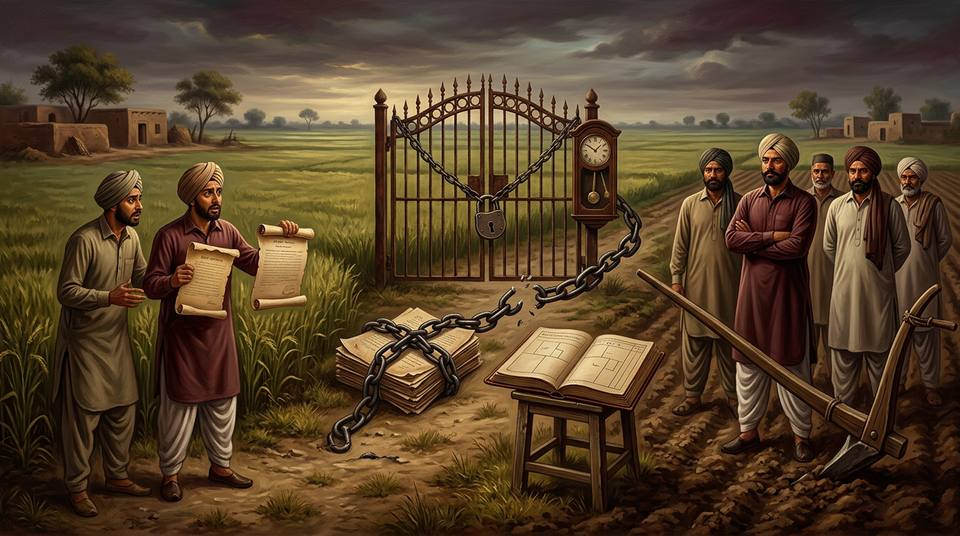

CASE 35 — DU CASE MATERIAL · ACQUISITION OF OWNERSHIP BY POSSESSION
Rajender Singh v. Santa Singh
adverse possessionlis pendens (s.52 TPA)Art. 142 / 144, 1908 Acts.28 extinguishmentbanjar land331 kanals 11 marlas

Facts in Detail
- The land: 331 kanals 11 marlas (khasra numbers given in the plaint), originally owned by Sham Singh (deceased).
- The devolution: Smt. Malan, Sham Singh's widow, gifted the plots in 1935, half and half, to the plaintiffs (sons of Smt. Premi, Sham Singh's daughter) and to Smt. Khemi (Premi's younger sister). Smt. Khemi, issueless, made a further gift to the plaintiffs before her death in 1944. The plaintiffs claim they obtained possession of the whole land through the Tehsildar about 13-12-1946.
- The cloud: because the rights of daughters and a widow's powers of donation under Punjab customary law were then uncertain, the defendants — the 8th degree collaterals of Sham Singh — filed a suit on 3-7-1940 for declaration and possession. It was stayed from 1941 to 29-5-1946 under the Indian Soldiers (Litigation) Act, 1925 (the plaintiffs being soldiers' beneficiaries); a parallel mutation fight in the revenue courts ended for the donees before the Financial Commissioner on 13-12-1946; the 1940 suit, renumbered in 1949, ended in the donees' favour in the Punjab High Court on 21-11-1958.
- The dispossessions alleged: the plaintiffs' Suit No. 179 of 1959 (filed 20/16-4-1959) alleged the defendants took illegal and forcible possession after 21-11-1958 and sought possession back. The defendants' case: they had taken possession after Smt. Khemi's death in 1944 and held "in open, continuous, exclusive possession as owners, adversely to the rest of the world" — the suit was barred by limitation and they had become owners by adverse possession.
- Courts below: the trial court framed three issues — (1) whether plaintiffs got possession through the Tehsildar c. 13-12-1946; (2) whether defendants took possession after 21-11-1958; (3) whether defendants became owners by adverse possession — placing issues 1–2 on the plaintiffs and issue 3 on the defendants. On evidence ("oral evidence coupled with the entries in the revenue records"), the courts below rejected the plaintiffs' possession story and accepted the defendants' possession from 1944 onwards, holding the suit barred under Art. 142 of the 1908 Act. The first appellate court, however, relying on Sukhubai v. Eknath Bellappa (AIR 1948 Nag 97), held that lis pendens prevented the defendants' rights from maturing during the 1940 suit — possession became adverse only on 21-11-1958, when the High Court dismissed the defendants' own appeal.
- The Full Bench (Punjab HC): majority (A.N. Grover, J.) — adverse possession commenced during the pendency of the earlier suit, and "once having begun to run, could not stop running merely because of the pendency" of that suit; minority (I.D. Dua, J.) — lis pendens would exclude the time of the 1940 suit pending. The plaintiffs appealed to the Supreme Court.
The Rajender Singh Timeline
1935
Smt. Malan (widow) gifts the land half-and-half to the plaintiffs and Smt. Khemi.
3-7-1940
Collaterals' suit for declaration & possession — stayed 1941 to 29-5-1946 (Soldiers' Litigation Act).
1944
Smt. Khemi dies issueless; defendants (their case) take possession and hold adversely from about this date.
13-12-1946
Financial Commissioner decides the mutation fight for the donees (plaintiffs claim possession through Tehsildar near this date).
21-11-1958
Division Bench decides the 1940 suit for the donees — the plaintiffs allege dispossession "after" this date.
20-4-1959
Suit No. 179 of 1959 for possession — squarely within Art. 142 (asserted possession & dispossession).
1944 → 1959
Over 12 years of the defendants' open, adverse, hostile, continuous, exclusive possession — concurrent findings of fact, accepted by the Full Bench majority.
1973
Supreme Court (Beg, J.): appeal dismissed — lis pendens does not arrest limitation.
Issues
- Does the doctrine of lis pendens in s. 52, Transfer of Property Act, 1882, arrest the running of limitation during the pendency of the defendants' 1940 suit — so that the defendants' adverse possession matured only after 21-11-1958?
- Was Art. 142 (or Art. 144) of the Limitation Act, 1908, correctly applied — including s. 3's duty to apply the bar even when not pleaded?
- Can banjar (uncultivated) land be adversely possessed at all?
- Could the plaintiffs invoke s. 14 of the 1908 Act (exclusion of time of proceedings bona fide in a court without jurisdiction) or the Custodian of Evacuee Property's claim under s. 8(4) of the Administration of Evacuee Property Act, 1950?
Arguments for Rajender Singh (plaintiffs-appellants)
- Lis pendens excluded time: while their opponents' 1940 suit over the very land was pending (1940–1958), the property could not be "dealt with" so as to affect the parties' rights — the defendants' possession could not ripen into title during the litigation (following Sukhubai, AIR 1948 Nag 97, as the first appellate court had).
- Extinction of title during the pendency of a suit must itself be hit by s. 52 — otherwise a party could gain by the litigation what he could not gain by a transfer.
- Banjar land: portions entered as banjar are vacant and incapable of cultivation — possession follows title, so they must be deemed in the plaintiffs' constructive possession; adverse possession of banjar land is impossible.
- Art. 142 was wrongly applied: its applicability was not put in issue by pleadings; and (via the Custodian) rights vesting under s. 8(4) of the Evacuee Property Act deserved adjudication.
Arguments for Santa Singh (defendants-respondents)
- Concurrent findings of fact: possession from 1944 was theirs — open, continuous, exclusive, as owners, adverse to the world; over 12 years completed before the 1959 suit.
- s. 52 TPA strikes at transfers and dealings — bilateral acts like sales — not at the continuance of wrongful possession, which is "one sided wrongful act"; the Limitation Act alone governs maturation of title by time.
- The plaintiffs' own plaint asserted possession and dispossession — squarely Art. 142; under Bindhyachal Chand (AIR 1934 All 993, Sulaiman C.J.) "the question of limitation in one sense becomes the question of title" — without subsisting title the suit must fail.
- s. 14 of the 1908 Act could not help: the cause of action in the 1940 suit was entirely different (indeed it was the defendants who sued there).
The Decision — Beg, J.
- Art. 142 squarely attracted: the plaintiffs having alleged possession and dispossession and sought delivery back, "the case fell squarely within the ambit of Article 142." Issues 1 and 2 bore directly on it; an issue need not recite the provision of law. And it is "the duty of the Court, in view of Section 3, to apply the bar of limitation where, on patent facts, it is applicable even though not specifically pleaded." Per Bindhyachal Chand: where the only question is discontinuance of the plaintiff's possession, limitation becomes the question of title, "because by virtue of Section 28, Limitation Act, if the claim is barred by time, the title must be deemed to be extinguished."
- Art. 142 or Art. 144 — immaterial for s. 28: "It is immaterial... whether Article 142 or Article 144... is applicable" — on the accepted findings, all elements of "open, adverse, hostile, continuous, and exclusive possession of the defendants for over 12 years were present," so extinguishment followed either way.
- Banjar land can be adversely possessed: "It may be that Banjar land cannot be cultivated, but... it could possibly [not] be urged that it is per se incapable of being actually physically possessed by use for other purposes, such as building or storing of wood or crops, apart from cultivation." Besides, the plaintiffs' own pleadings admitted the defendants' actual adverse possession of all the land — the point was a belated afterthought (CMP No. 2487 of 1967 seeking to introduce it was dismissed).
- Lis pendens — the core ruling: extinction of title by the Limitation Act "will not be hit by the doctrine of lis pendens simply because it is an extinction during the pendency of a suit... a case in which the extinction of title takes place by an application of the specific and mandatory provisions of the Limitation Act falls outside the scope of Section 52 of the Transfer of Property Act" — it is governed by the Limitation Act "exclusively."
- Why s. 52 cannot serve as a time-exclusion device: the doctrine strikes at attempts "to circumvent the jurisdiction of a court... by private dealings" — transfers and comparable bilateral transactions. "Taking of illegal possession or its continuance neither resemble[s] nor [is] comparable to a transfer. They are one sided wrongful acts and not bilateral transactions of a kind which ordinarily constitute 'deals' or dealings with property... They cannot confer immediate rights on the possessor. Continued illegal possession ripens into a legally enforceable right only after the prescribed period of time has elapsed." If the policy was to exclude litigation time, the provision would have been in the Limitation Act — indeed Part III of that Act deals with exclusion of time (s. 14 being its only litigation-time provision, inapplicable here).
- s. 3 forecloses judicial extension: "The effect of Section 3 Limitation Act is that it expressly precludes exclusion of time on a ground outside this Act even if it parades under the guise of a doctrine which has no application whatsoever here. Courts of Justice cannot legislate or reconstruct law contained in a statute or introduce exceptions when statutory law debars them from doing so. Even hard circumstances of a case do not justify the adoption of such a course." The plaintiffs could not "complain of hardship when their own negligence or failure to act in time enabled defendants to acquire rights."
- Support: Subbaiya Pandaram v. Mahammad Mustapha Marcayar (AIR 1923 PC 175) and Narayan Jivangouda Patil v. Puttabai (AIR 1945 PC 5) — limitation runs from the taking of possession notwithstanding the pendency of litigation; "We are in complete agreement with the majority view" (Grover, J.) of the Full Bench. The Custodian's s. 8(4) claim was not decided (dispute between co-defendants; no res judicata; the plaintiffs could not raise it "in a desperate attempt to clutch at a straw").
- Result: Full Bench affirmed; appeal dismissed; parties to bear their own costs throughout.
PRINCIPLE EVOLVED
- Lis pendens does not suspend limitation: adverse possession once begun runs through pending litigation; a possessor's title can mature by the Limitation Act even while a suit over the property is pending — the two doctrines belong to different statutes and different policies.
- Wrongful possession is not a "dealing": s. 52 TPA hits bilateral transactions (transfers, sales, comparable acts with immediate effect); continued illegal possession is a unilateral wrong that ripens only by efflux of time under the Limitation Act.
- The Limitation Act is exclusive on its own ground: s. 3 "precludes exclusion of time on a ground outside this Act even if it parades under the guise of a doctrine" — courts cannot create equitable exceptions; exclusion of time belongs to Part III (s. 14), whose conditions are strict.
- Limitation can be the question of title: in Art. 142 cases, barring the suit by time itself extinguishes title (s. 28 of the 1908 Act) — so the plea need not be raised by the parties; the court must apply it suo motu.
- Banjar land is not immune: uncultivable land can still be physically possessed for building, storing wood or crops — no per se exclusion from adverse possession.